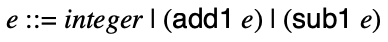
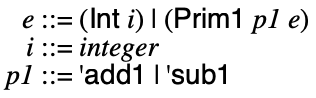

5 Blackmail: incrementing and decrementing
Let’s Do It Again!
5.1 Refinement, take one
We’ve seen all the essential pieces (a grammar, an AST data type definition, an operational semantics, an interpreter, a compiler, etc.) for implementing a programming language, albeit for an amazingly simple language.
We will now, through a process of iterative refinement, grow the language to have an interesting set of features.
Our second language, which subsumes Abscond, is Blackmail. Expressions in Blackmail include integer literals and increment and decrement operations. It’s still a dead simple language, but at least programs do something.
5.2 Concrete syntax for Blackmail
A Blackmail program consists of #lang racket line and a single expression, and the grammar of concrete expressions is:

So, 0, 120, and -42 are Blackmail expressions, but so are (add1 0), (sub1 120), (add1 (add1 (add1 -42))).
An example concrete program:
#lang racket (add1 (add1 40))
5.3 Abstract syntax for Blackmail
The grammar of abstract Backmail expressions is:

So, (Int 0), (Int 120), and (Int -42) are Blackmail AST expressions, but so are (Prim1 'add1 (Int 0)), (Sub1 (Int 120)), (Prim1 'add1 (Prim1 'add1 (Prim1 'add1 (Int -42)))).
A datatype for representing expressions can be defined as:
#lang racket (provide Int Prim1) ;; type Expr = ;; | (Int Integer) ;; | (Prim1 Op Expr) ;; type Op = 'add1 | 'sub1 (struct Int (i) #:prefab) (struct Prim1 (p e) #:prefab)
The parser is more involved than Abscond, but still straightforward:
#lang racket (provide parse) (require "ast.rkt") ;; S-Expr -> Expr (define (parse s) (match s [(? integer?) (Int s)] [(list (? op1? o) e) (Prim1 o (parse e))] [_ (error "Parse error")])) ;; Any -> Boolean (define (op1? x) (memq x '(add1 sub1)))
5.4 Meaning of Blackmail programs
The meaning of a Blackmail program depends on the form of the expression:
the meaning of an integer literal is just the integer itself,
the meaning of an increment expression is one more than the meaning of its subexpression, and
the meaning of a decrement expression is one less than the meaning of its subexpression.
The operational semantics reflects this dependence on the form of the expression by having three rules, one for each kind of expression:


The first rule looks familiar; it’s exactly the semantics of integers from Abscond. The second and third rule are more involved. In particular, they have premises above the line. If the premises are true, the conclusion below the line is true as well. These rules are conditional on the premises being true. This is in contrast to the first rule, which applies unconditionally.
For all integers i, ((Int i),i) is in
 .
.For expressions e0 and all integers i0 and i1, if (e0,i0) is in
 and i1
= i0 + 1, then ((Prim1 'add1 e0), i1)
is in
and i1
= i0 + 1, then ((Prim1 'add1 e0), i1)
is in  .
.For expressions e0 and all integers i0 and i1, if (e0,i0) is in
 and i1
= i0 - 1, then ((Prim1 'sub1 e0), i1)
is in
and i1
= i0 - 1, then ((Prim1 'sub1 e0), i1)
is in  .
.
These rules are inductive. We start from the meaning of integers and if we have the meaning of an expression, we can construct the meaning of a larger expression.
This may seem a bit strange at the moment, but it helps to view the
semantics through its correspondence with an interpreter, which given
an expression e, computes an integer i, such that
(e,i) is in  .
.
Just as there are three rules, there will be three cases to the interpreter, one for each form of expression:
#lang racket (provide interp) (require "ast.rkt") ;; Expr -> Integer (define (interp e) (match e [(Int i) i] [(Prim1 p e) (interp-prim1 p (interp e))])) ;; Op Integer -> Integer (define (interp-prim1 op i) (match op ['add1 (add1 i)] ['sub1 (sub1 i)]))
> (interp (Int 42)) 42
> (interp (Int -7)) -7
> (interp (Prim1 'add1 (Int 42))) 43
> (interp (Prim1 'sub1 (Int 8))) 7
> (interp (Prim1 'add1 (Prim1 'add1 (Prim1 'add1 (Int 8))))) 11
Here’s how to connect the dots between the semantics and interpreter:
the interpreter is computing, for a given expression e, the
integer i, such that (e,i) is in  . The
interpreter uses pattern matching to determine the form of the
expression, which determines which rule of the semantics applies.
. The
interpreter uses pattern matching to determine the form of the
expression, which determines which rule of the semantics applies.
if e is an integer (Int i), then we’re done: this is the right-hand-side of the pair (e,i) in
 .
.if e is an expression (Prim1 'add1 e0), then we recursively use the interpreter to compute i0 such that (e0,i0) is in
 . But
now we can compute the right-hand-side by adding 1 to i0.
. But
now we can compute the right-hand-side by adding 1 to i0.if e is an expression (Prim1 'sub1 e0), then we recursively use the interpreter to compute i0 such that (e0,i0) is in
 . But
now we can compute the right-hand-side by substracting 1 from i0.
. But
now we can compute the right-hand-side by substracting 1 from i0.
This explanation of the correspondence is essentially a proof by induction of the interpreter’s correctness:
Interpreter Correctness: For all Blackmail expressions
e and integers i, if (e,i) in
 , then (interp e) equals
i.
, then (interp e) equals
i.
5.5 An Example of Blackmail compilation
Just as we did with Abscond, let’s approach writing the compiler by first writing an example.
Suppose we want to compile (add1 (add1 40)). We already know how to compile the 40: (Mov 'rax 40). To do the increment (and decrement) we need to know a bit more x86-64. In particular, the add (and sub) instruction is relevant. It increments the contents of a register by some given amount.
Concretely, the program that adds 1 twice to 40 looks like:
default rel section .text global _entry _entry: mov rax, 40 add rax, 1 add rax, 1 ret
The runtime stays exactly the same as before.
shell
> make add1-add1-40.run nasm -g -f macho64 -o add1-add1-40.o add1-add1-40.s gcc runtime.o add1-add1-40.o -o add1-add1-40.run rm add1-add1-40.o > ./add1-add1-40.run 42
5.6 A Compiler for Blackmail
To compile Blackmail, we make use of two more a86 instructions, Add and Sub:
Examples
> (displayln (asm-string (list (Label 'entry) (Mov 'rax 40) (Add 'rax 1) (Add 'rax 1) (Ret))))
default rel
section .text
_entry:
mov rax, 40
add rax, 1
add rax, 1
ret
The compiler consists of two functions: the first, which is given a program, emits the entry point and return instructions, invoking another function to compile the expression:
#lang racket (provide (all-defined-out)) (require "ast.rkt" a86/ast) ;; Expr -> Asm (define (compile e) (prog (Global 'entry) (Label 'entry) (compile-e e) (Ret))) ;; Expr -> Asm (define (compile-e e) (match e [(Prim1 p e) (compile-prim1 p e)] [(Int i) (compile-integer i)])) ;; Op Expr -> Asm (define (compile-prim1 p e) (seq (compile-e e) (match p ['add1 (Add 'rax 1)] ['sub1 (Sub 'rax 1)]))) ;; Integer -> Asm (define (compile-integer i) (seq (Mov 'rax i)))
Notice that compile-e is defined by structural recursion, much like the interpreter.
We can now try out a few examples:
Examples
> (compile (Prim1 'add1 (Prim1 'add1 (Int 40))))
(list
(Global 'entry)
(Label 'entry)
(Mov 'rax 40)
(Add 'rax 1)
(Add 'rax 1)
(Ret))
> (compile (Prim1 'sub1 (Int 8)))
(list
(Global 'entry)
(Label 'entry)
(Mov 'rax 8)
(Sub 'rax 1)
(Ret))
> (compile (Prim1 'add1 (Prim1 'add1 (Prim1 'sub1 (Prim1 'add1 (Int -8))))))
(list
(Global 'entry)
(Label 'entry)
(Mov 'rax -8)
(Add 'rax 1)
(Sub 'rax 1)
(Add 'rax 1)
(Add 'rax 1)
(Ret))
And give a command line wrapper for parsing, checking, and compiling files in compile-file.rkt, we can compile files as follows:
shell
> racket -t compile-file.rkt -m add1-add1-40.rkt default rel section .text global _entry _entry: mov rax, 40 add rax, 1 add rax, 1 ret
And using the same Makefile setup as in Abscond, we capture the whole compilation process with a single command:
shell
> make add1-add1-40.run racket -t compile-file.rkt -m add1-add1-40.rkt > add1-add1-40.s nasm -g -f macho64 -o add1-add1-40.o add1-add1-40.s gcc runtime.o add1-add1-40.o -o add1-add1-40.run rm add1-add1-40.o > ./add1-add1-40.run 42
Likewise, to test the compiler from within Racket, we use the same asm-interp function to encapsulate running assembly code:
Examples
> (asm-interp (compile (Prim1 'add1 (Prim1 'add1 (Int 40))))) 42
> (asm-interp (compile (Prim1 'sub1 (Int 8)))) 7
> (asm-interp (compile (Prim1 'add1 (Prim1 'add1 (Prim1 'add1 (Prim1 'add1 (Int -8))))))) -4
5.7 Correctness and random testing
We can state correctness similarly to how it was stated for Abscond:
Compiler Correctness: For all expressions e and
integers i, if (e,i) in  , then (asm-interp (compile e)) equals
i.
, then (asm-interp (compile e)) equals
i.
And we can test this claim by comparing the results of running compiled and interpreted programs, leading to the following property, which hopefully holds:
Examples
> (define (check-compiler e) (check-eqv? (interp e) (asm-interp (compile e))))
The problem, however, is that generating random Blackmail programs is less obvious compared to generating random Abscond programs (i.e. random integers). Randomly generating programs for testing is its own well studied and active research area. To side-step this wrinkle, we have provided a small utility for generating random Blackmail programs (random.rkt), which you can use, without needing the understand how it was implemented.
Examples
> (require "random.rkt") > (random-expr) '#s(Int -5)
> (random-expr)
'#s(Prim1
add1
#s(Prim1
sub1
#s(Prim1 sub1 #s(Prim1 sub1 #s(Int -2)))))
> (random-expr)
'#s(Prim1
add1
#s(Prim1
sub1
#s(Prim1 add1 #s(Prim1 sub1 #s(Int 1)))))
> (random-expr)
'#s(Prim1
sub1
#s(Prim1
add1
#s(Prim1 sub1 #s(Prim1 sub1 #s(Int -3)))))
> (random-expr)
'#s(Prim1
add1
#s(Prim1
sub1
#s(Prim1 sub1 #s(Prim1 add1 #s(Int 4)))))
> (define e (random-expr)) > e
'#s(Prim1
add1
#s(Prim1 sub1 #s(Prim1 add1 #s(Int 0))))
> (compile e)
(list
(Global 'entry)
(Label 'entry)
(Mov 'rax 0)
(Add 'rax 1)
(Sub 'rax 1)
(Add 'rax 1)
(Ret))
> (for ([i (in-range 10)]) (check-compiler (random-expr)))
It’s now probably time to acknowledge a short-coming in our compiler. Although it’s great that random testing is confirming the correctness of the compiler on specific examples, the compiler is unfortunately not correct in general. Neither was the Abscond compiler.
To see why, recall that integers in Blackmail are represented as 64-bit values in the compiled code. The problem arises when 64 bits isn’t enough. Since the run-time system interprets the 64-bit values as a signed integer, we have 1 bit devoted to the sign and 63 bits devoted to the magnitude of the integer. So the largest number we can represent is (sub1 (expt 2 63)) and the smallest number is (- (expt 2 63)). What happens if a program exceeds these bounds? Well, whatever x86 does. Let’s see:
Examples
> (define max-int (sub1 (expt 2 63))) > (define min-int (- (expt 2 63))) > (asm-interp (compile (Int max-int))) 9223372036854775807
> (asm-interp (compile (Prim1 'add1 (Int max-int)))) -9223372036854775808
> (asm-interp (compile (Int min-int))) -9223372036854775808
> (asm-interp (compile (Prim1 'sub1 (Int min-int)))) 9223372036854775807
Now there’s a fact you didn’t learn in grade school: in the first example, adding 1 to a number made it smaller; in the second, subtracting 1 made it bigger!
This problem doesn’t exist in the interpreter:
Examples
> (interp (Int max-int)) 9223372036854775807
> (interp (Prim1 'add1 (Int max-int))) 9223372036854775808
> (interp (Int min-int)) -9223372036854775808
> (interp (Prim1 'sub1 (Int min-int))) -9223372036854775809
So we have found a counter-example to the claim of compiler correctness:
Examples
> (check-compiler (Prim1 'add1 (Int max-int)))
--------------------
FAILURE
name: check-eqv?
location: eval:99:0
actual: 9223372036854775808
expected: -9223372036854775808
--------------------
> (check-compiler (Prim1 'sub1 (Int min-int)))
--------------------
FAILURE
name: check-eqv?
location: eval:99:0
actual: -9223372036854775809
expected: 9223372036854775807
--------------------
What can we do? This is the basic problem of a program not satisfying its specification. We have two choices:
change the spec (i.e. the semantics and interpreter)
change the program (i.e. the compiler)
We could change the spec to make it match the behaviour of the compiler. This would involve writing out definitions that match the “wrapping” behavior we see in the compiled code. Of course if the specification is meant to capture what Racket actually does, taking this route would be a mistake. Even independent of Racket, this seems like a questionable design choice. Wouldn’t it be nice to reason about programs using the usual laws of mathematics (or at least something as close as possible to what we think of as math)? For example, wouldn’t you like know that (< i (add1 i)) for all integers i?
Unforunately, the other choice seems to paint us in to a corner. How can we ever hope to represent all possible integers in just 64 bits? We can’t. We need some new tricks. So in the meantime, our compiler is not correct, but writing down what it means to be correct is half the battle. We will get to correctness, but for the time being, we view the specification aspirationally.
5.8 Looking back, looking forward
We’ve now built two compilers; enough to start observing a pattern.
Recall the phases of a compiler described in What does a Compiler look like?. Let’s identify these pieces in the two compilers we’ve written:
Parsed into a data structure called an Abstract Syntax Tree
we use read to parse text into a s-expression
we use parse to convert an s-expression into an AST
Checked to make sure code is well-formed (and well-typed)
Simplified into some convenient Intermediate Representation
we don’t do any; the AST is the IR
Optimized into (equivalent) but faster program
we don’t do any
Generated into assembly x86
we use compile to generate assembly (in AST form), and use asm-string to obtain printable concrete X86-64 code
Linked against a run-time (usually written in C)
we link against our run-time written in main.c
Our recipe for building compiler involves:
Build intuition with examples,
Model problem with data types,
Implement compiler via type-transforming-functions,
Validate compiler via tests.
As we move forward, the language we are compiling will grow. As the language grows, you should apply this recipe to grow the compiler along with the language.